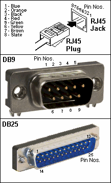

Troubleshooting LIS Serial Port
Purpose
This procedure provides information for troubleshooting serial ports and performing a LIS Loopback Test.
Notes
Important notes for diagnosing LIS communication issues:
- The COM2 port is the only port allowed for the user interface LIS connection.
- To cancel a send to LIS request where the customer inadvertently requests to send thousands of results to the Host, delete all the message request files named xxxxxxxx_xxxxxx_xxx.lii or xxxxx.listhat are found in the C:\ drive of the console PC.
- To diagnose an LIS communication issue, first confirm the function of the COM2 port. Use the LIS Diagnostics display in the UI. If further confidence is required, then use the LIS, LISA Diagnostic procedure in the Access Service Manual to evaluate message traffic.
- The cable between the PC and the LIS Host should be a crossover type. In a serial crossover cable, pin 2 on one end is connected to pin 3 on the other end.
- On early DTx PCs, noise on the serial cable could lock up the COM1 or COM2 port on the PC. The resolution was to reboot the PC to unlock the port. To correct the noise issue, a serial cable with only the TX, RX, and ground wires connected was implemented.
- Posting a
Terminator record missing in LIS message each time the UI console initializes or the Host is queried indicates that the LIS transmission index file C:\NexStep\Console\DRW\ transid.dat is corrupt.
- Delete the contents of the transid.dat file and save the empty file, or replace the file with the copy in the backup folder.
- Also delete LIS message files named "date_time_index.lii" (ex: 20090102_150906_879.lii) in the C:\ directory.
Troubleshooting
| Item | Actions |
|---|---|
| Query The LIS HOST | Query the LIS host.
|
| Checking the COM2 Serial Port | Check for problems with the PC serial ports.
Important: Procedure is not compatible with Monitors that use a USB cable for the Touch Screen function.
|
| Loopback Test Procedure | Run a loopback test.
Note: If the serial port checked out OK using the touch screen, then the Loopback Test is unnecessary.
|

LIS Connector Configurations
Note:
- Adapters are not available to order but might be available locally at an electronics store.
- To make a crossover connector, swap the RD and TD pins in the adapter made for one end of the cable.
- The connector pin numbers are molded into the connector face.
- Only the signal ground (SGND), receive data (RD), and transmit data (TD) pins are needed.
Caution: Adapters with all the pins connected can have communication problems caused by the noise picked up by the extra connected wires. Do not use the unneeded connector pins.

| Wire Color | RJ45 Pin | DB9 Pin | DB25 Pin | Signal Name |
|---|---|---|---|---|
| Blue | 1 | 6 | 6 | DSR (Unused Connector Pin) |
| Orange | 2 | 1 | 8 | DCD (Unused Connector Pin) |
| Black | 3 | 4 | 20 | DTR (Unused Connector Pin) |
| Red | 4 | 5 | 7 | SGND (Signal Ground) |
| Green | 5 | 2 | 3 | RD (Receive Data) |
| Yellow | 6 | 3 | 2 | TD (Transmit Data) |
| Brown | 7 | 8 | 5 | CTS (Unused Connector Pin) |
| White | 8 | 7 | 4 | RTS (Unused Connector Pin) |
| N/A | N/A | 9 | 22 | RI (Unused Connector Pin) |